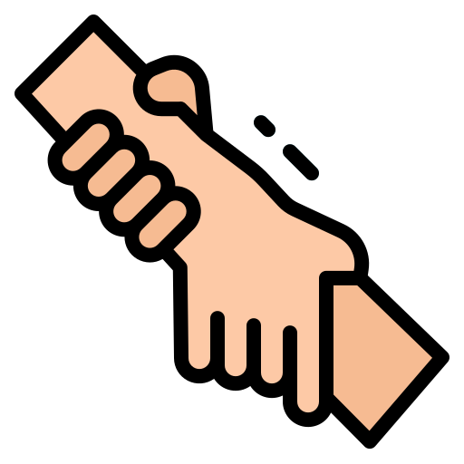
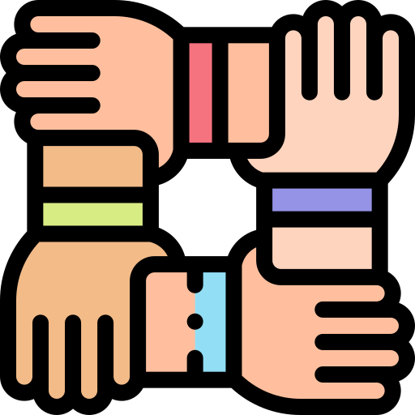

Bienvenidos a WhitUs
Les damos la bienvenida a nuestra pagina WithUs, donde buscamos ayudar a todas las personas, especialmente los jóvenes, del area metropolitana de Medellín que sufren de problemas emocionales y todo lo relacionado a un mal cuidado de la salud psicológica, llevando a cabo estrategias y alternativas viables para el equilibrio emocional de todos nuestros usuarios. Pues luego de un planteamiento hemos podido identificar esos principales y más comunes problemas que causan irritabilidad y daño a nuestra psique. Podrás ver estos problemas en nuestro menú de "ayuda".
Debido a la identificación de estos problemas hemos querido apoyar y servir, como ciudadanos y estudiantes, al mejoramiento de nuestra sociedad y a la salud de las personas; además de brindar información sobre cómo tener un buen cuidado de nuestra psique para no dañarla y dejar que esos problemas nos consuman la energía y las ganas de salir adelante.
Los invitamos, a todos ustedes, a que nos ayuden a colaborar con la sociedad, acompañándonos en cada paso del camino que damos hasta cumplir con nuestros ideales y objetivos planeados, nos pueden ayudar compartiendo nuestra página y recomendándonos a aquellas personas que necestan de esa ayuda. Tenemos muchas ganas de ayudar y queremos seguir creciendo, pero para ello WhitUs te necesita. ¿Te interesa hacer parte de esta familia?
¿Qué te brindamos?

Ayuda emocional:
Para que mejores busques un sitio donde puedas desahogarte y mejorar o resolver esos problemas que tienes que solo tú conoces.

Apoyo:
Para que de juntos podamos hacer que tú mejores y sanes esas herieras internas que tienes para poder tener una vida saludable y próspera.

Seguimiento:
Para continuar con un proceso completo de ayuda y sanación emocional para que no te vayas sin esa ayuda que te mereces y que estamos dispuestos a brindarte.
Confiabilidad:
Protegeremos tu identidad y los resultados que salgan desde nuestra encuesta de salud emocional solo podrán ser vistos por tí.

Escucha:
Te escucharemos y pondremos atención a eso que noes cuentes y luego de un seguimiento continuo poder estabilizar tu salud mental.